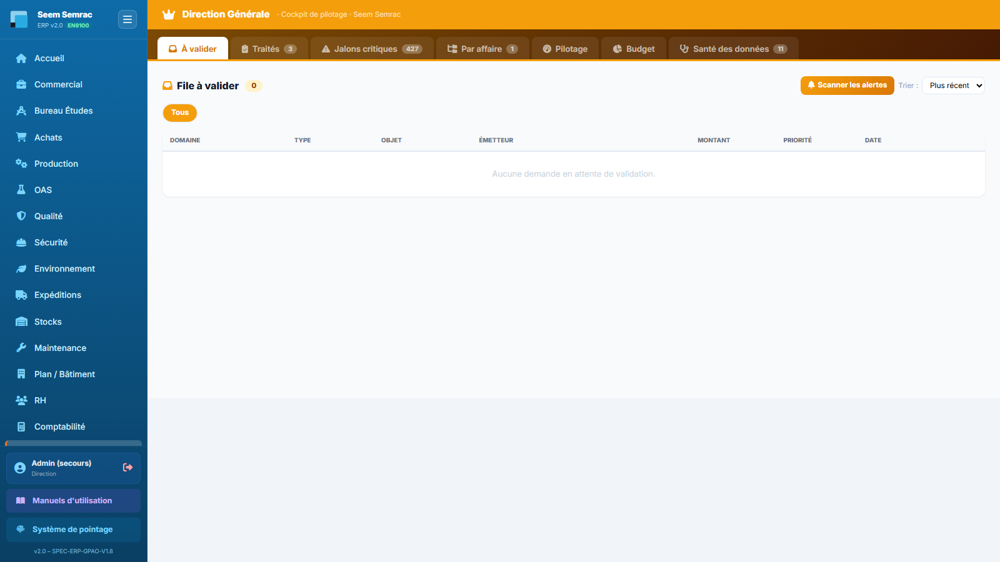
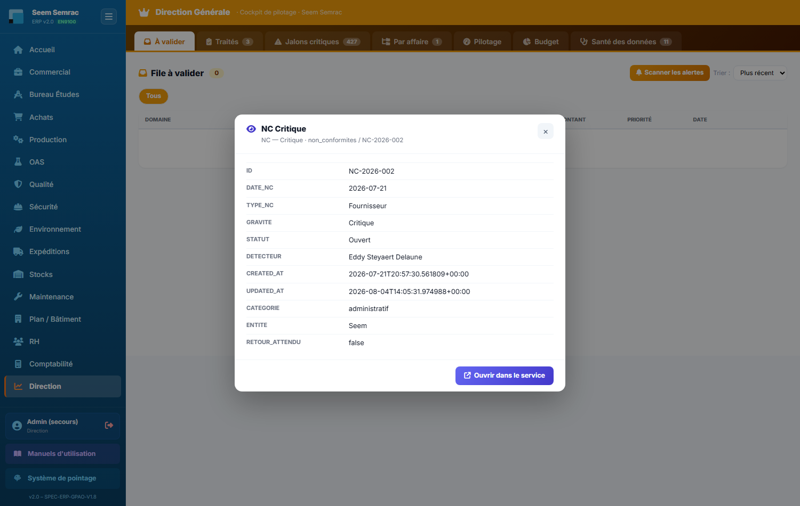
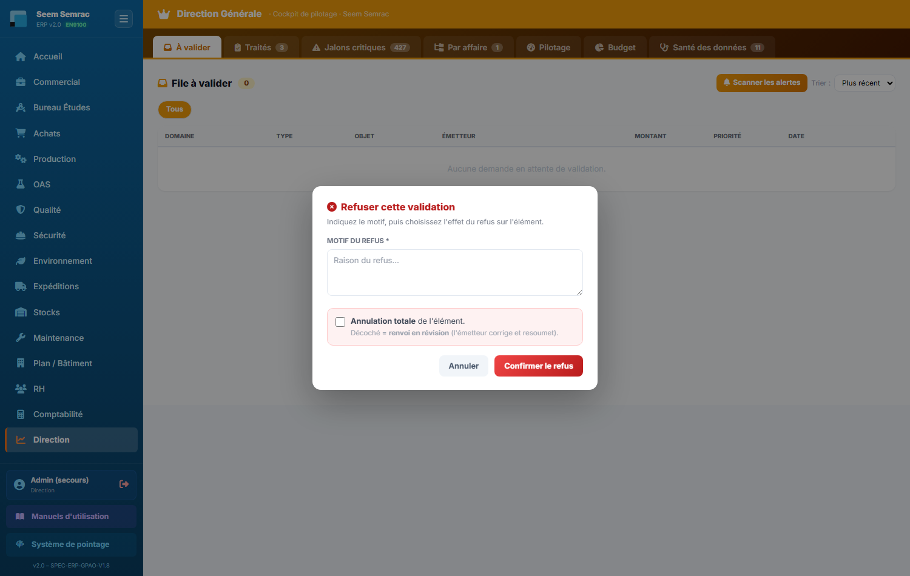
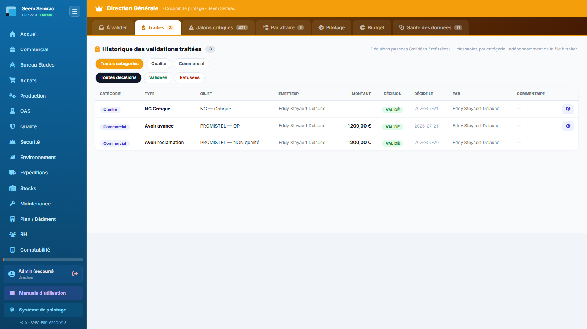
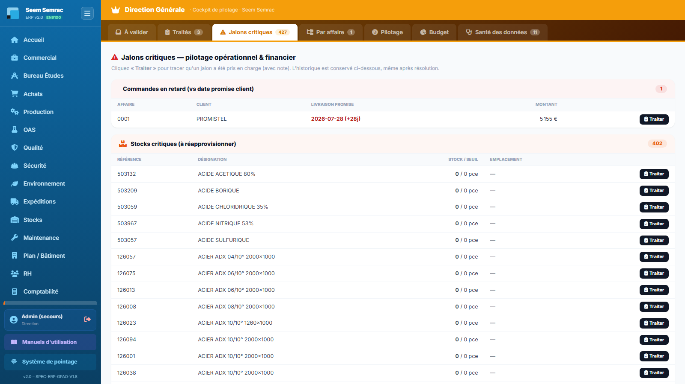
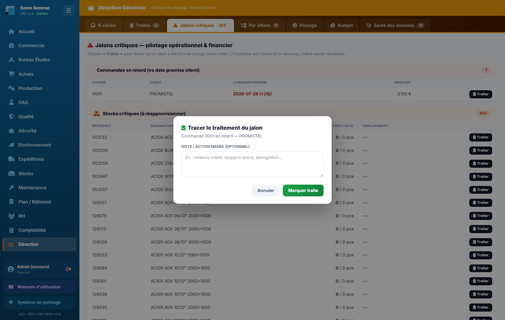
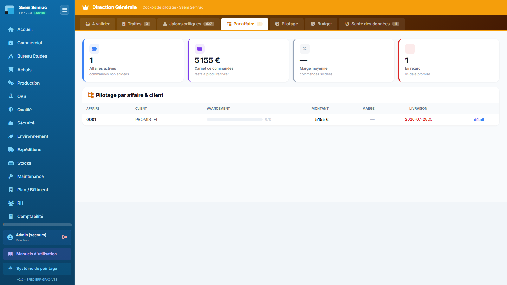
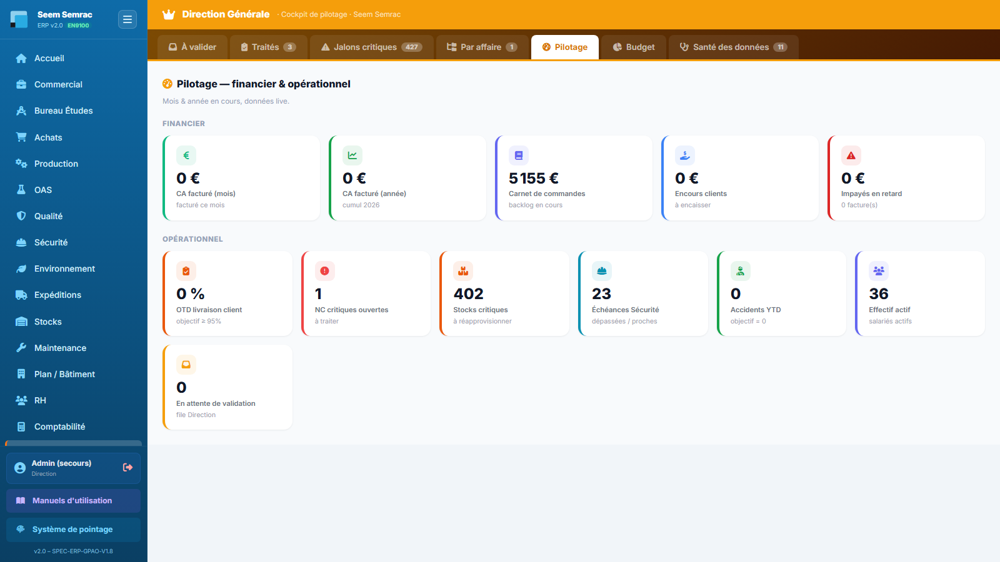
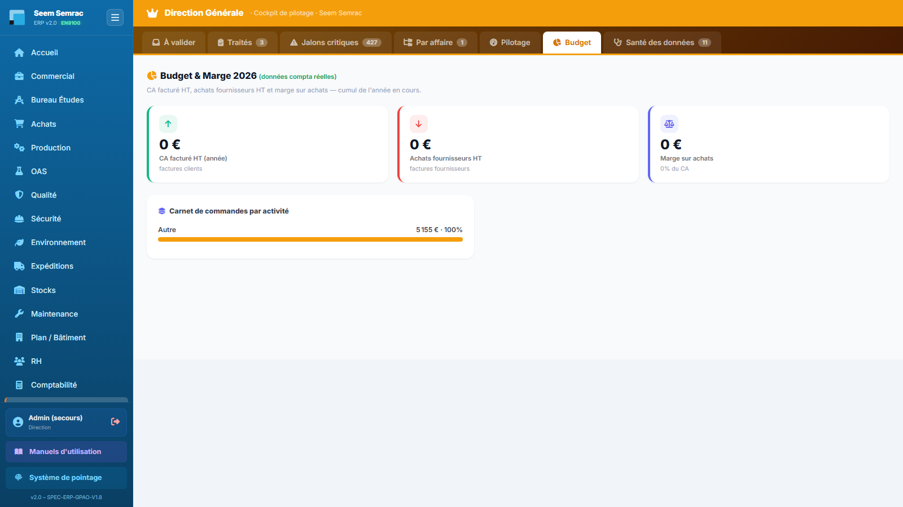
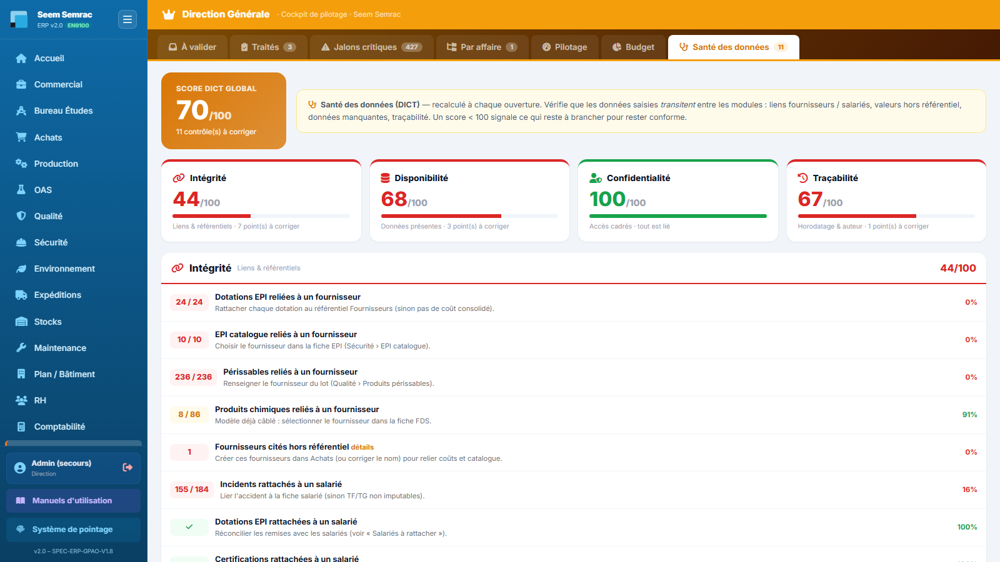

Le service Direction est le cockpit de pilotage de l'entreprise : il rassemble en un seul endroit tout ce qui attend un arbitrage (validations envoyées par les autres services), tout ce qui dérape (retards, impayés, non-conformités critiques, ruptures de stock, échéances de sécurité), la vue affaire par affaire, les indicateurs financiers et opérationnels, le budget de l'année et la qualité des données saisies dans l'ERP. Ce manuel décrit les 7 onglets, écran par écran.
👤 Pour qui : Direction (seul rôle à accéder à ce service ; les décisions sont refusées à tout autre compte)🧭 Dans l'ERP : Sidebar → Direction🗂 7 onglets
1
À valider
À quoi ça sert. C'est la boîte de réception de la Direction : tout ce que les autres services ont soumis à arbitrage arrive ici, dans une file unique. Un bon de commande d'achat stratégique, un avoir client, une facture fournisseur, une fiche salarié, une non-conformité grave, une sortie de quarantaine, un formulaire Sécurité : partout dans l'ERP, une case « Soumettre à la validation de la Direction » pousse la demande dans cette file. S'y ajoutent les alertes détectées automatiquement par l'ERP, ainsi que deux circuits historiques : les paiements de factures et les congés des fonctions support. C'est l'onglet qui s'ouvre par défaut quand vous entrez dans le service.
Ce que vous voyez
Un bandeau doré « Direction Générale · Cockpit de pilotage » coiffe la page, suivi de la barre des 7 onglets — chacun portant son compteur (nombre de demandes en attente, de jalons ouverts, de contrôles de données à corriger…). Sous le titre « File à valider » et son compteur, vous disposez du bouton « Scanner les alertes » et d'un menu Trier (Plus récent · Montant ↓). Une rangée de pastilles filtre par domaine : Tous, puis les domaines réellement présents dans la file (Compta, RH, Qualité, Sécurité, Achats, Commercial).
Colonnes du tableau : Domaine, Type, Objet, Émetteur, Montant, Priorité, Date, puis les boutons d'action.
Priorité : URGENT / CRITIQUE en rouge, sinon normal en vert. Une non-conformité de gravité Critique ou Bloquante arrive automatiquement en « urgent ».
Trois boutons par ligne : l'œil bleu (consulter l'objet soumis), la coche verte (valider) et la croix rouge (refuser). L'œil n'apparaît que si la demande est reliée à un objet consultable.
Si aucune demande n'attend : « Aucune demande en attente de validation. »
Sous le tableau, deux blocs de cartes apparaissent seulement s'ils sont alimentés : Paiements de factures (n° de facture, client, n° d'affaire, montant TTC et échéance) et Congés fonctions support (salarié, type de congé, période).

À valider — la file centrale, les pastilles de domaine au-dessus et, à droite de chaque ligne, les trois boutons œil / valider / refuser.
Pas à pas — instruire puis valider une demande
Filtrez la file si besoin : cliquez sur une pastille de domaine (par exemple Achats) pour ne garder que ces demandes, ou passez le tri sur « Montant ↓ » pour traiter d'abord les engagements les plus lourds.
Cliquez sur l'œil de la ligne : une fenêtre de consultation affiche la fiche réelle de l'objet soumis (commande, facture, non-conformité, salarié, bon de commande, demande d'achat, offre, lot, bon de travail…) champ par champ, sans quitter le cockpit.
Si vous voulez le contexte complet, cliquez sur « Ouvrir dans le service » en bas de cette fenêtre : l'ERP vous emmène sur le service concerné (une commande ouvre directement sa fiche affaire dans Commercial). Revenez ensuite au cockpit.
Cliquez sur la coche verte : la décision est enregistrée avec votre nom et la date, une notification « Validé. » s'affiche et la page se rafraîchit. La ligne quitte la file et bascule dans l'onglet Traités.
Côté service émetteur, l'objet porte désormais le badge Direction ✓ — le demandeur voit votre décision sans avoir à vous appeler.

Consulter la pièce source — l'œil ouvre la fiche réelle de l'objet soumis (ici une non-conformité critique), avec sous le titre la table d'origine et le numéro de pièce, puis chaque champ tel qu'il est en base : date, type, gravité, statut, détecteur, horodatages de création et de mise à jour. Le bouton violet « Ouvrir dans le service » en bas à droite bascule vers le service concerné ; la croix en haut à droite referme la fenêtre et vous laisse dans la file.
Pas à pas — refuser : annulation totale ou renvoi en révision
Cliquez sur la croix rouge : la fenêtre « Refuser cette validation » s'ouvre.
Saisissez le motif du refus — il est obligatoire : sans texte, l'ERP affiche « Indiquez un motif de refus. » et ne va pas plus loin.
Choisissez l'effet du refus avec la case « Annulation totale de l'élément » : cochée, l'élément est définitivement écarté ; décochée (comportement par défaut), c'est un renvoi en révision — l'émetteur corrige et resoumet.
Cliquez sur « Confirmer le refus ». La notification précise l'effet retenu (« Refusé — annulation totale. » ou « Refusé — renvoi en révision. ») et la demande rejoint l'onglet Traités avec le badge correspondant.
Cas particulier des sorties de quarantaine (soumises par la Qualité) : votre décision agit directement sur le lot. Validation → le lot est libéré ; refus en annulation → le lot est rejeté ; refus en révision → le lot revient « en cours » et la Qualité peut statuer à nouveau.
Champ
Saisie
Obligatoire
Explication
Motif du refus
Texte libre
Oui
Raison du refus. Repris tel quel dans la colonne Commentaire de l'onglet Traités et dans l'infobulle du badge côté service émetteur.
Annulation totale de l'élément
Case à cocher
Non (décochée par défaut)
Cochée = l'élément est annulé. Décochée = renvoi en révision, l'émetteur corrige et resoumet.

Refuser cette validation — le champ Motif du refus porte l'astérisque des champs obligatoires : tant qu'il est vide, « Confirmer le refus » ne part pas. L'encart rose en dessous porte la case « Annulation totale de l'élément », décochée par défaut, avec son rappel « Décoché = renvoi en révision » — c'est elle, et elle seule, qui décide si l'élément est écarté définitivement ou renvoyé à l'émetteur pour correction.
Pas à pas — alimenter la file avec le scan d'alertes
Cliquez sur « Scanner les alertes » : l'ERP relit les données vives et détecte les commandes en retard, les marges faibles (moins de 15 % sur une commande soldée), les factures clients impayées après échéance, les non-conformités critiques ou bloquantes ouvertes et les ruptures de stock (article géré tombé à zéro).
Une notification résume le résultat : nombre d'alertes ajoutées, nombre déjà présentes, nombre détectées. Les nouvelles lignes apparaissent dans la file avec l'émetteur « Moteur alertes ».
Traitez-les comme n'importe quelle demande : consultez l'objet avec l'œil, puis validez (vous prenez acte) ou refusez avec un motif.
Pas à pas — paiements de factures et congés support
Dans le bloc « Paiements de factures », vérifiez le client, le montant TTC et la date d'échéance affichés sur la carte, puis cliquez sur « Valider » (le paiement est autorisé) ou sur la croix (refus).
Dans le bloc « Congés fonctions support », contrôlez le salarié, le type de congé et la période, puis « Valider » : l'ERP crée les jours d'absence correspondants dans le RH et la notification indique combien de jours ont été posés. La croix refuse la demande.
Règles & points d'attention
La décision est réservée à la Direction : un compte d'un autre service ne peut ni valider ni refuser (l'ERP répond « Décision réservée à la Direction. »).
Le scan d'alertes ne crée jamais de doublon : une alerte déjà présente — même déjà traitée, validée ou refusée — n'est pas recréée au scan suivant.
Le scan est volontairement plus sélectif que l'onglet Jalons critiques sur les stocks : il ne remonte que les ruptures franches (article tombé à zéro), le réapprovisionnement de routine restant l'affaire des Achats.
Chaque demande garde son émetteur : le nom de la personne qui a coché la case dans son service, ou « Moteur alertes » pour les détections automatiques.
Attention : un refus en annulation totale n'est pas un simple avis — sur une sortie de quarantaine, il fait passer le lot en « rejeté ». Quand vous voulez seulement faire corriger un dossier, laissez la case décochée : le renvoi en révision permet à l'émetteur de resoumettre.
Astuce : lancez « Scanner les alertes » en début de semaine, puis triez par Montant ↓ : vous voyez immédiatement les engagements financiers et les retards les plus coûteux, avant de descendre dans le détail.
2
Traités
À quoi ça sert. C'est la mémoire des décisions : toutes les demandes déjà validées ou refusées, avec leur motif, leur auteur et leur date. On y revient pour répondre à un « qu'avait-on décidé sur ce dossier ? », pour préparer une revue de direction, ou pour justifier une décision lors d'un audit. Cet onglet ne se vide jamais : il est indépendant de la file à traiter.
Ce que vous voyez
Le titre « Historique des validations traitées » avec le nombre total de décisions. Deux rangées de filtres cumulables : d'abord par catégorie (Toutes catégories, puis les domaines présents), ensuite par décision (Toutes décisions · Validées · Refusées). Le tableau détaille : Catégorie, Type, Objet, Émetteur, Montant, Décision, Décidé le, Par, Commentaire, et l'œil de consultation.
Décisions affichées : VALIDÉ · REFUSÉ · ANNULATION · REFUSÉ · RÉVISION — le refus n'a donc pas un seul visage, on distingue toujours l'annulation du renvoi pour correction.
La colonne Commentaire reprend le motif saisi lors du refus ; elle affiche « — » quand aucun commentaire n'a été laissé.
Si aucune décision n'a encore été prise : « Aucune décision enregistrée pour l'instant. »

Traités — les deux rangées de filtres (catégorie puis décision) se combinent ; les colonnes Décidé le / Par / Commentaire constituent la trace d'audit.
Pas à pas — retrouver une décision
Cliquez sur la pastille de la catégorie concernée (Achats, Qualité, Compta…), puis, si besoin, sur « Refusées » ou « Validées » : les deux filtres s'appliquent ensemble.
Repérez la ligne à sa colonne Objet (elle porte le libellé rédigé par l'émetteur : fournisseur, client, numéro de pièce…).
Cliquez sur l'œil pour rouvrir la fiche de l'objet tel qu'il est aujourd'hui, et éventuellement l'ouvrir dans son service d'origine.
Règles & points d'attention
Cet onglet ne contient que les demandes validées ou refusées. Les jalons critiques marqués « Traité » ont leur propre historique, en bas de l'onglet Jalons critiques.
Une décision ne se rejoue pas depuis cet écran : il est en consultation. Si un dossier doit repasser en décision, il doit être resoumis par son service.
L'œil peut répondre « Objet introuvable » : c'est normal quand l'élément d'origine a été supprimé depuis la décision — la trace de la décision, elle, reste.
Astuce : le filtre « Refusées » est le meilleur point de départ d'une revue de direction : il montre en un écran ce que l'entreprise a arbitré à la baisse, avec le motif écrit.
3
Jalons critiques
À quoi ça sert. Cet onglet ne contient aucune saisie : il lit directement les données vives de l'ERP et affiche ce qui déraille aujourd'hui, réparti en cinq familles — retards de livraison, stocks sous seuil, factures clients impayées, non-conformités critiques et échéances de sécurité dépassées. C'est la revue quotidienne du dirigeant : ce qui est rouge ici coûte de l'argent, du client ou de la conformité. Chaque ligne peut être marquée « Traité » pour tracer sa prise en charge.
Ce que vous voyez
Cinq sections repliées en cartes, chacune avec son compteur à droite du titre. Une section vide affiche « Rien à signaler ✓ ».
Commandes en retard (vs date promise client) — Affaire, Client, Livraison promise (en rouge avec le nombre de jours de retard), Montant. Une commande livrée, close, terminée, soldée ou annulée n'y figure plus.
Stocks critiques (à réapprovisionner) — Référence, Désignation, Stock / seuil, Emplacement. Un article apparaît dès que son stock est retombé au niveau ou en dessous de son point de commande (ou de son stock mini).
Factures clients impayées en retard — Facture, Client, Échéance (avec les jours de dépassement), Montant TTC. Les brouillons et les factures payées sont exclus.
Non-conformités critiques / bloquantes ouvertes — NC, Date, Gravité (Critique ou Bloquante), Lot ou type. Une NC clôturée, fermée, résolue ou traitée disparaît de la liste.
Échéances Sécurité dépassées — Type, Objet, Échéance. Le type précise l'origine : VGP (vérification périodique dépassée), EPI (péremption atteinte ou à moins de 30 jours), Conformité (obligation non conforme ou échue), Habilitation (certification expirée ou à renouveler), ATEX (revue de zone dépassée) et Rejet hors VLE (mesure environnementale non conforme).
En bas de page, « Historique des jalons critiques traités » : Catégorie, Objet, Traité le, Par, Note — avec l'œil pour rouvrir l'objet concerné.

Jalons critiques — les cinq familles avec leur compteur ; à droite de chaque ligne, le bouton noir « Traiter » ou la pastille verte « Traité ».
Pas à pas — tracer la prise en charge d'un jalon
Repérez la ligne concernée (par exemple une commande à +12 jours de retard) et cliquez sur le bouton noir « Traiter ».
La fenêtre « Tracer le traitement du jalon » rappelle l'objet visé. Saisissez une note décrivant l'action menée — relance client, réappro lancé, dérogation demandée… Le champ est facultatif, mais c'est lui qui donne sa valeur à l'historique.
Cliquez sur « Marquer traité » : la ligne troque son bouton contre une pastille verte Traité dont l'infobulle indique la date, l'auteur et la note.
La ligne s'ajoute aussitôt à l'historique des jalons traités, en bas de l'onglet — même après que le problème a disparu des données.
Si une alerte du scan existait déjà pour ce même objet dans l'onglet « À valider », elle est absorbée : elle sort de la file d'attente et devient cette trace « traité ». Vous ne traitez donc jamais deux fois le même sujet.

Tracer le traitement du jalon — sous le titre, la fenêtre rappelle l'objet exactement visé (ici « Commande 0001 en retard — PROMISTEL ») : vérifiez-le avant de valider, c'est la ligne dont vous cliquez le bouton « Traiter ». Le champ Note / action menée est marqué optionnel, mais c'est lui qui donne son intérêt à l'historique. « Marquer traité » remplace aussitôt le bouton noir de la ligne par la pastille verte Traité ; « Annuler » ferme sans rien tracer.
Règles & points d'attention
« Traiter » ne corrige rien : c'est une trace de pilotage. Le retard, l'impayé ou la NC restent visibles tant que la donnée source n'a pas changé dans son service (livraison enregistrée, encaissement saisi, NC clôturée).
L'action est idempotente : re-traiter le même jalon met à jour la note et l'horodatage au lieu de créer un doublon.
Les listes sont volontairement plafonnées à l'écran (les 20 premières lignes par famille, 25 pour la Sécurité) : elles servent à décider, pas à faire l'inventaire. Le détail exhaustif se consulte dans le service concerné.
Le marquage « Traité » est, comme la décision de validation, réservé à la Direction.
Bon à savoir : les échéances de Sécurité proviennent de six sources différentes du service Sécurité / Environnement (VGP, EPI, conformité réglementaire, habilitations, zones ATEX, mesures de rejet). Une ligne rouge ici veut souvent dire qu'une saisie manque dans ces modules, pas qu'un contrôle n'a pas été fait.
Astuce : traitez la revue dans l'ordre des cartes — argent (retards, impayés), matière (stocks), conformité (NC, Sécurité) — puis relisez l'historique en fin de mois : il raconte, note après note, ce que la Direction a réellement piloté.
4
Par affaire
À quoi ça sert. La vue transversale affaire par affaire et client par client : pour chaque commande, l'avancement réel de la production, le montant engagé, la marge et la date de livraison promise. C'est l'écran de la revue de portefeuille : quelles affaires avancent, lesquelles sont en retard, lesquelles gagnent ou perdent de l'argent.
Ce que vous voyez
Quatre tuiles en tête : Affaires actives (commandes non soldées), Carnet de commandes (montant restant à produire et livrer), Marge moyenne et En retard (nombre d'affaires dépassant la date promise — la tuile passe au vert quand il n'y en a aucune). Sous le titre « Pilotage par affaire & client », le tableau liste : Affaire, Client, Avancement, Montant, Marge, Livraison et un lien détail.
Avancement : une barre de progression accompagnée du décompte « bons de travail soldés / total ». Grise tant que rien n'est soldé, orange en cours de route, verte à 100 %.
Marge en pourcentage du montant, avec un code couleur immédiat : vert à partir de 15 %, orange entre 0 et 15 %, rouge en dessous de zéro. « — » signifie que la marge réelle n'est pas encore connue.
Livraison : la date promise, affichée en rouge et suivie d'un « ⚠ » si elle est dépassée alors que l'affaire n'est pas soldée.
Les affaires en retard remontent automatiquement en tête de tableau.
S'il n'y a aucune commande : « Aucune commande en base. »

Par affaire — la barre d'avancement traduit le nombre de bons de travail soldés ; les colonnes Marge et Livraison colorent immédiatement les affaires à surveiller.
Pas à pas — passer une affaire en revue
Lisez d'abord les quatre tuiles : elles donnent la photo du portefeuille (nombre d'affaires vivantes, carnet restant, marge moyenne, retards).
Parcourez les premières lignes du tableau — ce sont les affaires en retard, remontées d'office.
Pour une affaire précise, comparez Avancement et Livraison : une barre à 30 % avec une date déjà passée est un sujet de réunion, pas de mail.
Cliquez sur détail en bout de ligne : l'ERP ouvre la fiche de la commande côté Production, où se trouvent les lots, les bons de travail et l'avancement pièce par pièce.
Règles & points d'attention
L'avancement est un décompte de bons de travail soldés : il reflète le travail déclaré à l'atelier, pas une estimation.
La marge affichée est la marge réelle calculée par l'ERP au fil de la production ; elle reste vide tant que les coûts n'ont pas été consommés.
Le tableau affiche au maximum les 100 premières affaires : pour une recherche fine, passez par le service Commercial.
Une affaire close, livrée ou annulée n'entre plus dans les tuiles « Affaires actives » et « Carnet de commandes », mais reste dans le tableau.
Astuce : une ligne à 100 % d'avancement mais toujours ouverte signale généralement une affaire produite qui attend sa libération qualité ou son bon de livraison — le sujet se règle en un appel aux Expéditions.
5
Pilotage
À quoi ça sert. Le tableau des indicateurs de direction, calculés en direct sur les données de l'ERP : cinq chiffres financiers et sept chiffres opérationnels, sur le mois et l'année en cours. C'est l'écran que l'on regarde chaque lundi matin, et celui que l'on projette en revue de direction.
Ce que vous voyez
Deux blocs de tuiles, précédés du rappel « Mois & année en cours, données live ».
Financier : CA facturé (mois) · CA facturé (année) (cumul de l'année civile) · Carnet de commandes (le backlog encore ouvert) · Encours clients (le montant facturé restant à encaisser) · Impayés en retard (montant et nombre de factures échues non réglées).
Opérationnel : OTD livraison client — le taux de livraison à l'heure, avec l'objectif ≥ 95 % rappelé sous la tuile : elle est verte au-dessus de 95 %, orange en dessous · NC critiques ouvertes · Stocks critiques · Échéances Sécurité · Accidents YTD (accidents du travail de l'année, objectif = 0, la tuile est verte à zéro et rouge dès le premier) · Effectif actif · En attente de validation (le volume de votre file de l'onglet 1).

Pilotage — bloc financier en haut, bloc opérationnel en dessous ; la couleur de chaque tuile porte déjà le verdict par rapport à l'objectif.
Pas à pas — lire les indicateurs
Comparez CA facturé (mois) et Carnet de commandes : le premier dit ce qui est encaissable, le second ce qui reste à produire — c'est le couple qui annonce les mois suivants.
Regardez ensuite Encours clients et Impayés en retard : l'écart entre les deux mesure la qualité du recouvrement. Le détail nominatif est dans l'onglet Jalons critiques.
Sur l'OTD, une valeur sous 95 % renvoie directement aux commandes en retard de l'onglet Jalons critiques : ce sont exactement les mêmes commandes.
Les tuiles NC critiques, Stocks critiques et Échéances Sécurité reprennent les compteurs des familles de jalons : si un chiffre bouge, ouvrez l'onglet 3 pour voir de quelles lignes il s'agit.
Règles & points d'attention
L'OTD se calcule sur les commandes dont la date promise est passée : c'est la part de celles qui ne sont pas en retard. Tant qu'aucune échéance n'est arrivée, l'indicateur affiche « — ».
Les chiffres de CA et d'encours de cet onglet sont exprimés en TTC, alors que l'onglet Budget raisonne en HT : ne comparez pas directement les deux écrans.
Les factures en brouillon sont exclues de tous les cumuls : un CA qui semble faible peut simplement signifier que des factures n'ont pas été finalisées en Compta.
Tous les indicateurs sont recalculés à chaque ouverture de la page : aucun chiffre n'est figé ni saisi à la main.
Bon à savoir : ces tuiles donnent la photo du jour. Pour les courbes, les comparaisons N-1 et les filtres par période ou par site, passez par le service Tableaux de bord.
6
Budget
À quoi ça sert. La vue économique de l'année : ce que l'entreprise a facturé, ce qu'elle a acheté et ce qui reste entre les deux. Les chiffres proviennent des factures réellement enregistrées en Comptabilité — clients d'un côté, fournisseurs de l'autre — et non d'un budget prévisionnel saisi à la main. Une seconde carte montre comment le carnet de commandes se répartit entre les activités.
Ce que vous voyez
Le titre « Budget & Marge » suivi de l'année en cours et de la mention « données compta réelles ». Trois tuiles, puis une carte de répartition.
CA facturé HT (année) — cumul des factures clients de l'année civile, hors brouillons.
Achats fournisseurs HT — cumul des factures fournisseurs de la même année.
Marge sur achats — la différence entre les deux, assortie de son pourcentage du CA.
Carnet de commandes par activité — une barre par activité (Seem, Semrac…), avec le montant et le poids en pourcentage, triée du plus gros au plus petit. Si aucune commande n'existe : « Aucune commande enregistrée. »

Budget — les trois tuiles CA / achats / marge, puis la répartition du carnet de commandes activité par activité.
Pas à pas — lire la marge de l'année
Lisez d'abord CA facturé HT et Achats fournisseurs HT : ce sont deux cumuls bruts de l'année civile en cours.
Contrôlez le pourcentage affiché sous Marge sur achats : c'est la marge sur achats, pas la marge nette — elle ne déduit ni la main-d'œuvre, ni les charges de structure.
Descendez sur la carte Carnet de commandes par activité : elle indique quelle activité porte le travail à venir, donc où se joueront les prochains mois.
Règles & points d'attention
Ces montants ne valent que ce que vaut la saisie en Comptabilité : une facture fournisseur non enregistrée gonfle artificiellement la marge.
Le cumul est calé sur l'année civile en cours et se remet donc à zéro au 1er janvier.
La répartition par activité porte sur le carnet de commandes (les commandes enregistrées), pas sur le chiffre d'affaires facturé : les deux chiffres n'ont pas la même base.
Attention : la « marge sur achats » n'est pas un résultat d'exploitation. Elle mesure l'écart entre facturation client et achats fournisseurs ; pour la rentabilité affaire par affaire, utilisez la colonne Marge de l'onglet « Par affaire ».
7
Santé des données
À quoi ça sert. Un ERP ne vaut que par la qualité de ce qu'on y saisit. Cet onglet audite l'ERP lui-même selon quatre piliers — Disponibilité, Intégrité, Confidentialité, Traçabilité — et attribue un score sur 100. Il ne juge pas le terrain : il repère les données qui ne circulent pas entre les modules (un EPI sans fournisseur, un accident sans salarié, une habilitation orpheline) et vous dit précisément où corriger la saisie. C'est l'outil de préparation d'un audit et le thermomètre du déploiement de l'ERP.
Ce que vous voyez
En haut, le Score DICT global sur 100 dans un cartouche coloré, avec le nombre de contrôles à corriger, et un encadré rappelant que tout est recalculé à chaque ouverture. Dessous, quatre jauges — une par pilier — puis le détail, contrôle par contrôle.
Les quatre piliers : Intégrité (liens & référentiels), Disponibilité (données présentes), Confidentialité (accès cadrés), Traçabilité (horodatage & auteur). Chaque jauge indique son score et le nombre de points à corriger, ou « tout est lié ».
Code couleur des scores : vert à partir de 90, orange de 70 à 89, rouge en dessous de 70.
Chaque contrôle affiche à gauche un compteur — une coche quand tout est bon, sinon « nombre en défaut / total » — puis son libellé, la consigne de correction (le service et l'écran où agir) et, à droite, le taux de complétude en pourcentage.
Un bouton détails apparaît quand l'ERP peut nommer les cas fautifs : il déplie la liste des références concernées (fournisseurs hors référentiel, personnes absentes de la base salariés, lots périmés…), avec la mention « + n autre(s)… » au-delà de huit.
Les lignes marquées d'un ℹ sont des informations de posture (sécurité de la plateforme, horodatage automatique) : elles ne comptent pas dans le score.

Santé des données — le score DICT global, les quatre jauges par pilier, puis chaque contrôle avec sa consigne de correction et son taux de complétude.
Ce que chaque pilier contrôle
Intégrité — les rattachements manquants : dotations EPI, catalogue EPI, produits périssables et produits chimiques sans fournisseur ; fournisseurs cités en texte libre mais absents du référentiel Achats ; accidents, dotations et certifications non reliés à une fiche salarié ; personnes citées qui n'existent pas dans la base salariés.
Disponibilité — les données indispensables au pilotage : produits chimiques sans fiche de données de sécurité, lots périssables périmés encore en stock, dotations EPI sans prix (donc invisibles dans les dépenses HSE), obligations de conformité non conformes ou échues.
Confidentialité — la gouvernance des accès : salariés actifs sans rôle ni autorisations, salariés actifs sans identifiant de connexion (matricule et code PIN, indispensables pour tracer qui fait quoi).
Traçabilité — la preuve du « qui a fait quoi, quand » : accidents clôturés sans date de clôture, non-conformités sans horodatage de mise à jour, décisions de validation sans nom de décideur.
Pas à pas — faire remonter le score
Ouvrez la jauge la plus basse : c'est là que l'effort rapporte le plus.
Dans la section correspondante, repérez les contrôles au compteur rouge et lisez la consigne : elle nomme l'écran exact où corriger (« Sécurité › EPI catalogue », « Qualité › Produits périssables », « Achats »…).
Cliquez sur détails quand le bouton est proposé : vous obtenez la liste nominative des cas à traiter — de quoi confier une consigne précise au service concerné.
Faites corriger la saisie dans le service, puis revenez sur l'onglet : le score est recalculé à l'ouverture, sans aucune manipulation.
Recommencez jusqu'à ce que les quatre jauges soient au vert : l'ERP est alors réellement branché de bout en bout.
Règles & points d'attention
Le score d'un pilier est la moyenne des taux de complétude de ses contrôles ; le score global est la moyenne des quatre piliers. Un seul contrôle très incomplet peut donc tirer une jauge vers le bas.
Un défaut ici n'est pas un problème terrain : c'est une donnée manquante ou mal reliée dans l'ERP. La correction se fait toujours à la source, dans le service émetteur, jamais depuis cet écran (l'onglet est en consultation).
Le contrôle « fournisseurs cités hors référentiel » et « personnes citées absentes de la base salariés » raisonnent sur les noms distincts réellement cités : deux orthographes d'un même fournisseur comptent pour deux écarts — corrigez le nom ou créez la fiche.
Astuce : avant un audit client ou de certification, imprimez cet écran : un score DICT élevé, contrôle par contrôle, démontre en quelques minutes que le système d'information est maîtrisé et tracé.